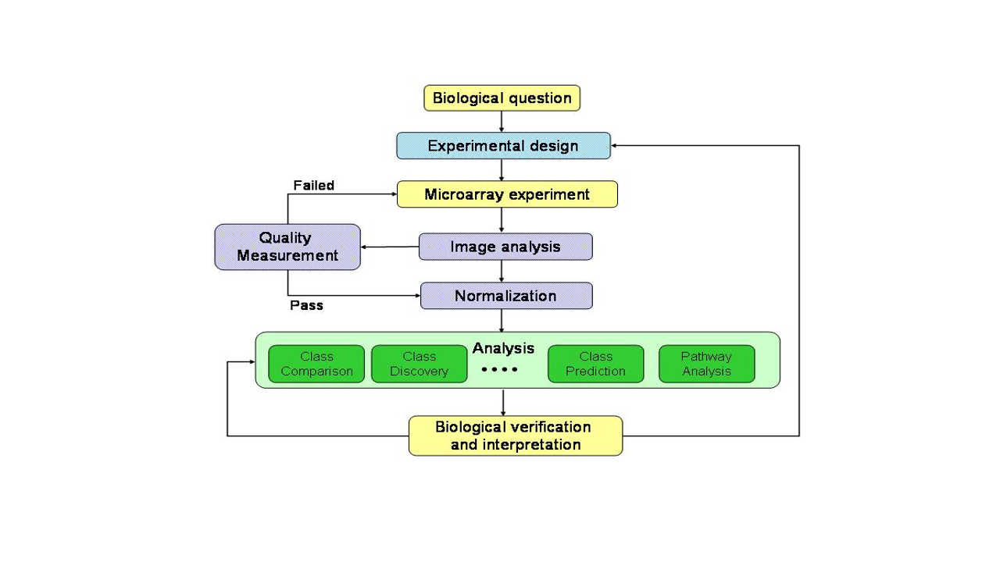
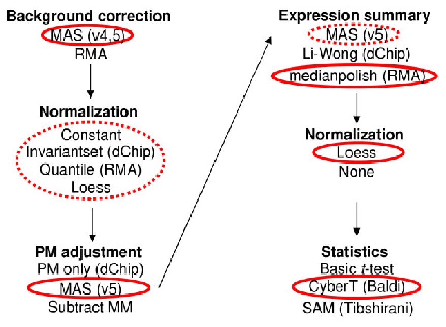

Este capítulo es una corta transición entre la primera parte del curso, en la que se han presentado los conceptos y herramientas básicos y la segunda en donde se presentan por separado y con mayor detalle los métodos de análisis de datos de microarrays.
Su objetivo por tanto es ofrecer una visión de conjunto que sirva de guía (“roadmap”) para los capítulos siguientes de forma que sin perder el detalle de cada uno de ellos tengamos conciencia de en que punto del proceso general nos encontramos.
El capítulo se estructura en dos partes. En la primera se presentan brevemente algunos de los problemas que típicamente se puede querer estudiar con microarrays u otras técnicas similares de análisis de datos de alto rendimiento. A continuación se presenta lo que se ha llamdo aquí el proceso de análisis de microarrays. Finalmente se intoducen algunos casos reales que, a modo de ejemplo se utilizarán en los capítulos siguientes.
Los microarrays y otras tecnologías de alto rendimiento se han aplicado a multitud de investigaciones, de tipus muy diversos que van desde estudio del cancer (Alizadeh et al. (2000), Golub et al. (1999), van ’t Veer et al. (2002)) al de la germinación y la maduración del tomate (Moore et al. (2002)). A pesar de ello no resulta complicado clasificar los estudios realizados en algunos de los grandes bloques que se describen a continuación. La clasificación está basada en el excelente texto de Simon y colegas (Simon et al. (2003)) y aunque se origina en problemas de microarrays se puede aplicar fácilmente a estudios de genómica o ultrasecuenciación.
El objetivo de los estudios comparativos es determinar si los perfiles de expresión génica difieren entre grupos previamente identificados. También se conoce estos estudios como de selección de genes diferencialmente expresados y son, sin duda los más habituales. Los grupos pueden representar una gran variedad de condiciones, desde distintos tejidos a distintos tratamientos o múltiples combinaciones de factores experimentales.
El análisis de este tipo de experimentos, que se describe en el capítulo sobre selección de genes diferencialmente expresados utiliza herramientas estadísticas como las pruebas de comparación de grupos paramétricas (t de Student) o no (test de Mann-Whitney) o diversos métodos de análisis de la varianza.
Entre los ejemplos de la sección @ref{c4examples} los casos @ref{celltypes}, @ref{estrogen} o @ref{CCL4} hacen referencia a estudios comparativos.
La predicción de clase puede confundirse con la selección de genes en tanto que disponemos de clases predefinidas pero su objetivo es distinto, ya que no pretende simplemente buscar genes cuya expresión sea distinta entre dichos grupos sino genes que puedan ser utilizados para identificar a que clase pertenece un “nuevo” individuo dado cuya clase es “a priori” desconocida. El proceso de predicción suele empezar con una selección de genes informativos, que pueden ser, o no, los mismos que se obtendrían si aplicáramos los métodos del apartado anterior, seguida de la construcción de un modelo de predicción y, lo que es más importante, de la verificación o validación de dicho modelo con unos datos nuevos independientes de los utilizados para el desarrollo del modelo.
Aunque el interés de la predicción de clase es muy alto se trata de un procedimiento mucho más complejo y con más posibilidades de error que la simple selección de genes diferencialmente expresados.
Entre los ejemplos de la sección @ref{c4examples} el caso @ref{golub} trata de un problema de predicción, a la vez que uno de descubrimiento de clases.
Un problema distinto a los descritos se presenta cuando no se conoce las clases en que se agrupan los individuos. En este caso de lo que se trata es de encontrar grupos entre los datos que permitan reunir a los individuos más parecidos entre si y distintos de los de los demás grupos. Los métodos estadísticos que se emplearan en estos casos se conocen como análisis de clusters y no son tan complejos como los de predicción de clase aunque algunos aspectos como por ejemplo la definición del número de grupos no resulta tampoco sencillo.
Entre los ejemplos de la sección \(\ref{c4examples}\) tanto el caso golub, en parte, como el @ref{breastTum} tratan problemas de descubrimiento de clases.
Una curiosidad del campo de la estadística es que el término clasificación aparece usado de forma indistinta para referirse a problemas de predicicón de clase o de descubrimiento de clase.
Una vez identificados los principales tipos de estudios quedan muchos que no coinciden plenamente con ninguno de ellos. Sin entrar en detalles podemos señalar los estudios de evolución a lo largo del tiempo (“time course”), los de significación biológica (“Gene Enrichment Analysis”, “Gene Set Enrichment Analysis”, …) , los que buscan relaciones entre los genes (“network analysis” o “pathway analysis”). De momento con conocer e identificar los tres grandes bloques mencionados resultará más que suficiente.
Una de las dificultades con que se encuentra la persona que comienza en el análisis de datos de microarrays es de donde obtener ejemplos concretos con los que prácticar las técnicas que está aprendiendo.
No es difícil encontrar datos de microarrays en internet por lo que se han seleccionado algunos conjuntos de datos interesantes para utilizarlos de ejemplo a lo largo del curso. Algunos de éstos son “populares” en el sentido de que han sido utilizados en diversas ocasiones y por lo tanto se encuentran bien documentados. Otros se han escogido simplemente porque ilustran bien algunas de las ideas que se desea exponer o por su accesibilidad.
Todos los datos corresponden a investigaciones publicadas por lo que no se describen exhaustivamente sinó que se expone brevemente el origen y objetivos del trabajo –incluyendo su clasificación según los grupos definidos en la sección anterior– y las características perinentes para el análisis como el tipo de microarrays, los grupos –si los hay– o como acceder a los datos.
Este conjunto de datos, que se denominará “celltypes”, corresponde a un estudio realizado por Chelvarajan y sus colegas (Chelvarajan et al. (2006)) que analizaron el efecto de la estimulación con lipopolisacáridos en la regulación por parte de citoquinas de ciertos procesos biológicos relacionados con la inflamación.
Este estudio es del tipo “class comparison” es decir su principal objetivo es la obtención de genes diferencialmente expresados entre dos o más condiciones.
Los datos se encuentran disponibles en la base de datos pública GEne Expression Omnibus mantenida por el National Institute of Health (NIH), pero pueden descargarse de la página de materiales del curso para garantizar su disponibilidad.
A finales de los años 90, Todd Golub y sus colaboradores (Golub et al. (1999)) realizaron uno de los estudios más populares hasta el momento con datos de microarrays. En él utilizaron microarrays de oligonucleótidos para 6817 genes humanos para mirar de encontrar una forma de distinguir (clasificar) tumores de pacientes con leucemia linfoblástica aguda (ALL) de aquellos que sufrían de leucemia mieloide aguda (AML). Además se interesaba por la posibilidad de descubrir subgrupos de forma que pudieran definirse variantes de cada una de estas patologías a nivel molecular.
La diversidad de objetivos del estudio lleva a clasificarlo tanto entre los del tipo de predicción de clase como entre los que buscan descubrir nuievas clases o grupos en los datos.
Los datos de este estudio se encuentran disponibles en la web del instituto Broad, en donde se llevó a cabo (http://www.broadinstitute.org). También se encuentra disponible un paquete de R denominado ALL que permite utilizarlos directamente usando R y Bioconductor.
Scholtens y colegas (Scholtens et al. (2004)) describen un estudio sobre el efecto de un tratamiento con estrógenos y del tiempo transcurrido desde el tratamiento en la expresión génica en pacientes de cáncer de mama. Los investigadores supusieron que los genes asociados con una respuesta temprana podrían considerarse dianas directas del tratamiento, mientras que los que tardaron más en hacerlo podrían considerarse objetivos secundarios correspondientes a dianas más alejadas en las vías metabólicas.
Estos datos han sido utilizados multitud de veces en los cursos de análisis de microarrays realizados por el proyecto Bioconductor y se encuentran disponibles en forma de paquete de R, el paquete estrogen. Una cracaterística importante de este paquetes es el hecho de que en vez de los datos procesados proporciona los datos “crudos”en forma de archivos .CEL de Affymetrix. Esto permite una mayor flexibilidad a la hora de reutilizarlos lo que explica su popularidad.
Holger y colegas de la empresa LGC Ltd. en Teddington, Inglaterra realizaron unos expeimentos con microarrays de dos colores en los que trataron hepatocitos de ratón con tetraclorido de carbono (CCL4) o con dimetilsulfóxido (DMSO). El tetraclorido de carbono fue ampliamente utilizado en productos de limpieza o refrigeración para el hogar hasta que se detectó que podía tener efectos tóxicos e incluso cancerígenos. El DMSO es un solvente similar, sin efectos tóxicos conocidos, que se utilizó como control negativo.
Los datos de este estudio no han sido publicados pero se encuentran disponibles en el paquete CCL4 de bioconductor. Su interés reside por un lado en que se trata de datos de microarrays de dos colores de la marca Agilent –en un momento en que la mayoría de estudios se realizan con datos de un color. Aparte de esto cabe resaltar el hecho de que el paquete incluye, de forma similar al anterior, los datos “crudos” en forma de archivos de tipo “Genepix” uno de los programas populares para escanear imágenes generadas con microarrays de dos colores.
Este estudio es también un estudio de comparación de clases cuyo objetivo principal es la selección de genes cuya expresión se asocia al tratamiento con CCL4 o DMSO.
Los datos de este ejemplo denominado yeast son datos ya normalizados referidos a la expresión de los genes en distintos momentos del ciclo delular de la levadura e decir desde que concluye la división celular hasta que se inicia la siguiente.
Los datos puede descargarse desde la página del proyecto “Yeast Cell Cycle Project” (Proyecto de estudio del ciclo celular de la levadura) en la dirección:
La tabla \(\ref{ejemplosEstudios}\) resume la lista de ejemplos que se utilizan en este manual indicando el nombre con que nos referiremos de aquí en adelante a cada conjunto de datos as' como algunas de sus carcaterísticas.
La tabla siguiente resume los “datasets” utilizados en este manual. Aparte del nombre (arbitrario y “mnemotécnico”) se indica el tipo de microarrays, el número de muestras, y el tipo de problema para el que se utilizaron originalmente.
| Nombre | Tipo (Modelo) | N. Muestras | Tipo de estudio |
|---|---|---|---|
celltypes |
Un color (Affy, Mouse 4302) | 12 | Comparativo |
golub |
Un color (Affy, HGU95A) | 38 | Clasificación |
estrogen |
Un color (Affy, HGU95A) | 8 | Comparativo |
CCL4 |
Dos colores (Agilent, WG Rat Microarray) | 16 | Comparativo |
swirl |
Dos colores (“Custom”) | 4 | Comparativo |
breastTum |
Un color (Affy, HGU95A) | 49 | Clasificación |
Una vez descritos los tipos de análisis y algunos ejemplos podemos pasar a describir el proceso de análisis de microarrays que se resume brevemente en la figura @ref{c04analysisProcess}.
El análisis de microarrays, como la mayoría de análisis debe proceder de forma ordenada y siguiendo el método científico:
Tal como ilustra la figura @ref(fig:c04analysisProcess>) el análisis de microarrays puede ser fácilmente visualizado como un proceso que empieza por una pregunta biológica y concluye con una interpretación de los resultados de los análisis que, de alguna forma, confiamos nos acerque un poco a la respuesta de la pregunta inicial.

Figure 3.1: Proceso de análisis de microarrays
El proceso descrito es básicamente una forma razonable de proceder en general. Los microarrays y otros datos genómicos son diferentes en su naturaleza de los datos clásicos alrededor de los que se han desarrollado la mayor parte de técnicas estadísticas. En consecuencia, en muchos casos ha sido necesario adaptar las técnicas existentes o desarrollar otras nuevas para adecuarse a las nuevas situaciones encontradas. Esto ha determinado que existan muchos métodos para cada una de los pasos descritos anteriormente lo que da lugar a una grandísima cantidad de posibilidades.
En la práctica lo que suele hacerse es optar por utilizar algunos de los métodos en los que hay un cierto consenso acerca de su calidad y utilidad para cada problema. Allison (Allison et al. (2006)) repasa los puntos principales de este consenso dando una lista de puntos a tener en cuenta en cualquier estudio que utilice microarrays. Imbeaud y Auffray (Imbeaud and Auffray (2005)) citan una lista de hasta 39 puntos que uno debe seguir en un experimento con microarrays para usar “buenas prácticas”.
Finalmente Zhu y otros (Zhu, Miecznikowski, and Halfon (2010)) utilizan un conjunto de arrays con valores de expresión conocidos para proponer los que, a su parecer, resultan los métodos más apropiados para cada etapa desde la corrección del backround hasta la selección de genes diferencialmente expresados. La figura 3.2 ilustra algunas de las opciones sugeridas por dichos autores.

Figure 3.2: Diseño de arrays
Los capítulos que siguen al presente proceden aproximadamente en el orden del proceso descrito en 3.1.